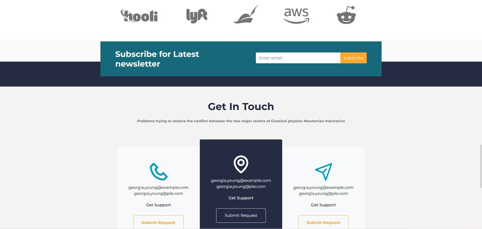
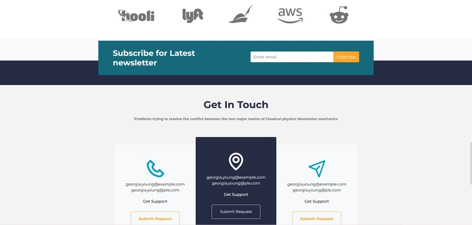

POPCODE


Projet réalisé durant ma formation Access Code School.
PopCode est inspiré du site PopCornTV ou le but est de chercher et retrouver les références de différents langages de programmation cachés dans une illustration.
Ce projet m'a permis de perfectionner mon utilisation de Javascript avec l'implémentation de différentes fonctions, telles que la prise en charge des bonnes et mauvaises réponses, ainsi qu'une fonction zoom pour mieux visualiser les éléments
En savoir plus Visiter le site


 
